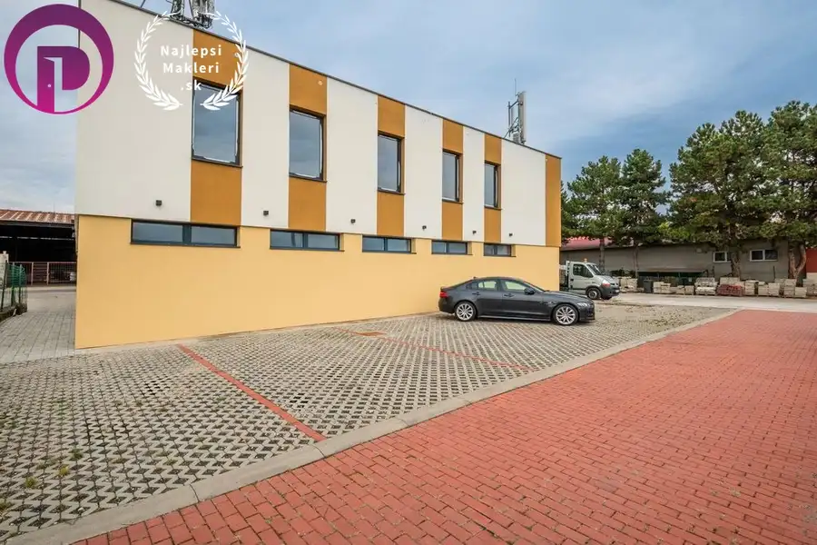
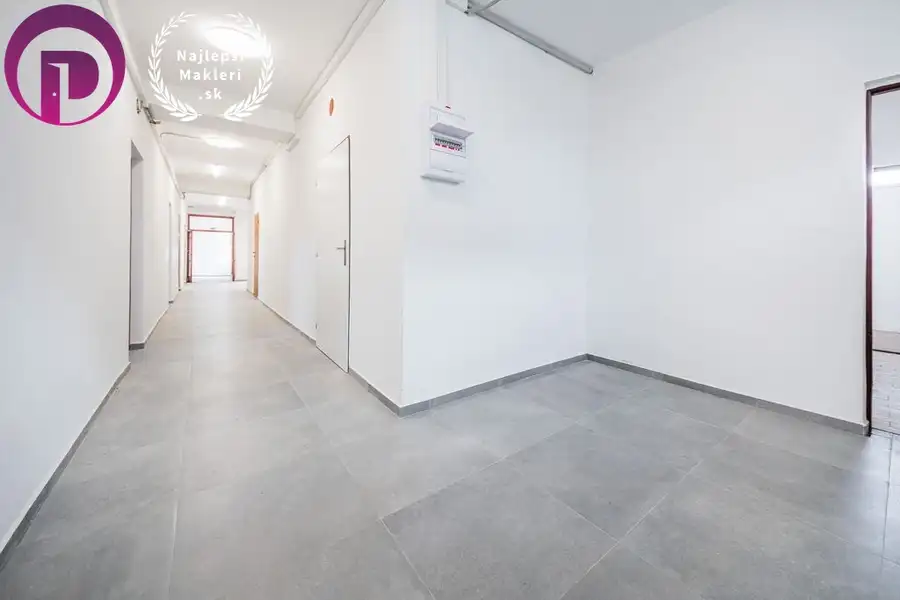
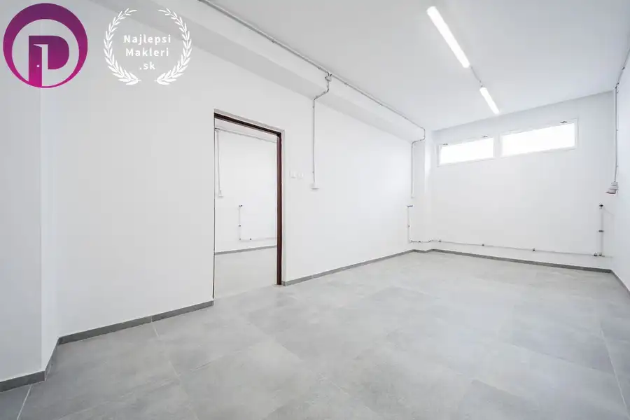

Polyfunkčný objekt, 500 m2 – Svätý Jur, možnosť bývania a podnikania v jednom
Svätý Jur




- Plocha500 m²
- StavČiastočná rekonštrukcia
- VlastníctvoFiremné
- Energetická triedaB
O nehnuteľnosti
Polyfunkčný objekt, 500 m2 – Svätý Jur, MOŽNOSŤ BÝVANIA A PODNIKANIA V JEDNOMEXKLUZÍVNE ponúkame na predaj polyfunkčný objekt v atraktívnej lokalite Svätý Jur, len pár minút od Bratislavy. Nehnuteľnosť ponúka široké možnosti využitia – priestory vhodné pre kancelárie alebo bývanie, showroom, výrobné alebo skladové priestory.Objekt je ideálny pre investora, podnikateľa alebo developera, ktorý hľadá kombináciu bývania a podnikania na jednom mieste. Výborná dopravná dostupnosť a parkovanie priamo pri budove.Tento objekt predstavuje stabilnú a výnosnú investíciu v rastúcej lokalite s kompletnou občianskou vybavenosťou.Objekt už teraz prináša výnosy vďaka vysielaču Orange, ktorý je umiestnený na streche budovy (500,-EUR/mesačne).Vďaka svojej variabilite a strategickej polohe neďaleko Bratislavy je ideálny na kombináciu bývania a podnikania alebo ako výnosová nehnuteľnosť s možnosťou prenájmu jednotlivých častí.BUDOVA: Svätý Jur – ulica Na PažitiÚžitková plocha: 500m2Pozemok: 278m2podlažia: dveparkovacie státia: 7Budova má dva samostatné vstupy.Rekonštrukcia: 2023 – Zateplenie a fasáda s osvetlením, strecha, odvodnenie stavby, plastové okná a dvere1. podlažie - rekonštrukcia – elektrina, voda, toalety, dlažba, steny, osvetlenie2. podlažie - pôvodný stav - holopriestor, po prerobení možnosť využívať ako kancelárie alebo 4 bytové jednotkyKONŠTRUKCIA+ samonosná betónová konštrukcia + steny a priečky – tepelne izolačná tehla + zateplenie polystyrénom 15cm+ strecha – UV odolná asfaltová izolačná krytina - 2023SIETE+ elektrina, mestská voda, veľká žumpa (cca. 15 kubíkov)Parkovanie+ možnosť parkovania priamo pred budovou – 7 parkovacích miest, prenajatých od mestaLOKALITA:+ obľúbená lokalita s rastúcou hodnotou nehnuteľností+ Svätý Jur patrí medzi najvyhľadávanejšie lokality v blízkosti Bratislavy. Je známy svojou pokojnou atmosférou, historickým centrom a vinárskou tradíciou, ktoré vytvárajú príjemné prostredie na bývanie aj podnikanie+ mesto ponúka kompletnú občiansku vybavenosť – školy, škôlky, obchody, služby, reštaurácie či zdravotné stredisko. Výborná je aj dopravná dostupnosť – autom len pár minút od Bratislavy, priamym železničným spojením do centra alebo napojením na diaľnicu D1+ objekt susedí s budovou I. Svätojurskej, akciová spoločnosťCENA: 579.990,- EUR bez DPH+ vrátane sprostredkovateľskej provízieKONTAKTPeter POLÁČIK, RSc.0915 131 373POLACIK@NajlepsiMakleri.skwww.NajlepsiMakleri.sk
Parametre
- Druh
- Polyfunkčný objekt
- Dátum zverejnenia
- 22. 10. 2025
- Elektrina
- Na pozemku - 230 V
- Energetický certifikát budovy
- B
- Odpadové vody
- Na pozemku - Žumpa
- Plocha pozemku
- 278 m²
- Plyn
- Nedostupné
- Počet bytov
- 4
- Počet nadzemných podlaží
- 2
- Prístupová komunikácia
- Asfaltová
- Rok výstavby
- 1973
- Stav nehnuteľnosti
- Čiastočná rekonštrukcia
- Typ
- Predaj
- Typ konštrukcie
- Zmiešaná
- Vlastníctvo
- Firemné
- Voda
- Na pozemku - Diaľkový vodovod
- Vybavenie
- Technická miestnosť
- Zastavaná plocha
- 278 m²
- Úžitková plocha
- 500 m²